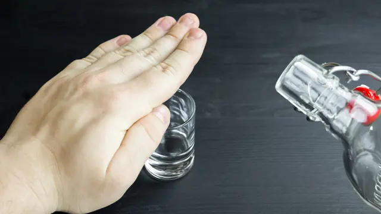

De-addiction
Treatment for alcohol and drug dependence, from medically supervised withdrawal through to relapse prevention.
The emphasis is less on detoxification itself than on what holds afterwards. Alcohol , Drugs , Withdrawal management , Smoking cessation